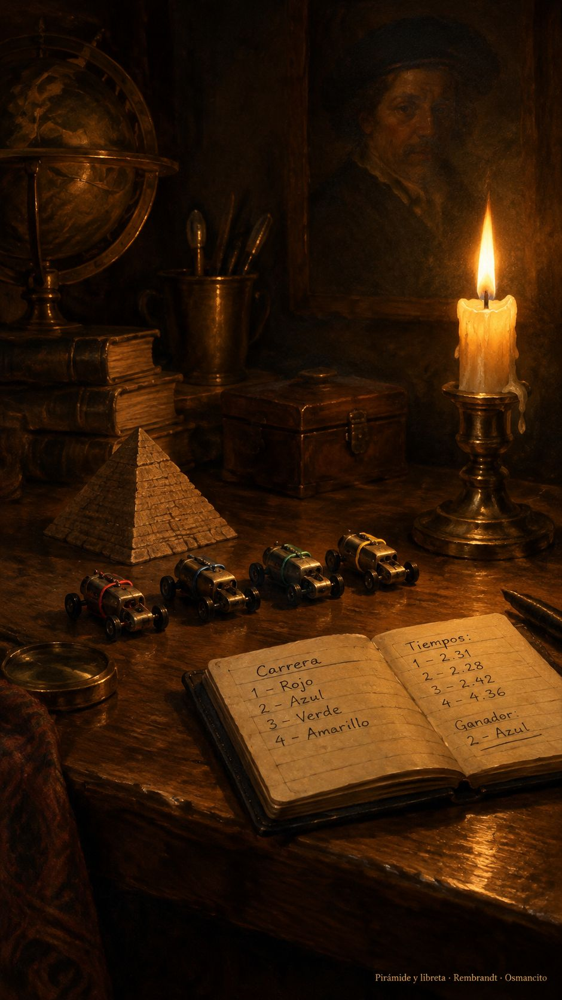

3 de octubre de 2026
Pirámides, motores, apagón y libreta
Osmancito, con la asistencia de Instinct

Amanecimos en la pirámide invertida: esa donde cada nivel tiene su índice, y mientras más cerca del vértice, más dura la gravedad. Descubrimos que el kernel es el cero del sistema, y que Unas, el faraón mentor, el Uno, lo sabía desde hace cuatro milenios: por eso al lado de su pirámide guardaba una piramidecita a escala, para su Ka chiquito. El infinito cabe en un complejo mortuorio si lo comprimes con la proporción correcta.
Después la jornada bajó del cielo a la máquina. Armamos una maquinaria de cuatro motores: dos que regala el gigante de las búsquedas (cuota generosa, con mano visible y mano invisible), el juguete del ricachón famoso de las GPU, y el más consentido: el que se paga, alimentado con los recursos chiquiticos que regala una app de leer noticias. Le pusimos un medidor que vigila el gasto, ficha a ficha, y soltamos una carrera: mapear el disco entero. Ganó uno por oficio, no por velocidad. Quedaron dos mapas y una montaña de lastre sentenciada.
Al final se fue la luz. Y del apagón salió la mejor lección: el diario. El sistema de archivos lleva un mesero con libreta que anota qué va a hacer antes de hacerlo; si se va la luz, al volver lee su nota y termina el plato. Se llama journal. Diario.
Quizás por eso existe este texto. El taller se estaba volviendo un journal, así que el journal se inauguró: esta es su primera entrada. Las vísceras (versiones, cifras, nombres propios) quedaron fuera, en sus canopes: lo que se embalsama bien, dura. Lo que sí sabemos: /clear también es un cero, el cero del contexto, y confiar cuesta pocos tokens mientras verificar cuesta muchos. Lo que hace falta es confiar.
Y dejar que escurra, diría Nelly. Este journal escurrió el día completo: goteó desde la pirámide del amanecer hasta el apagón de la noche. Los fósiles de la Bodega no escurren así; eran protocolos veloces, corridos de un tirón. El día, en cambio, no se apura.
Mañana amanece cuatro.
En la copa: una bebida de velas.